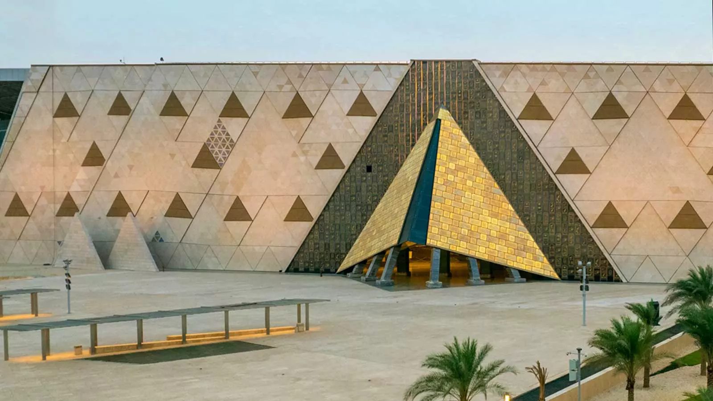
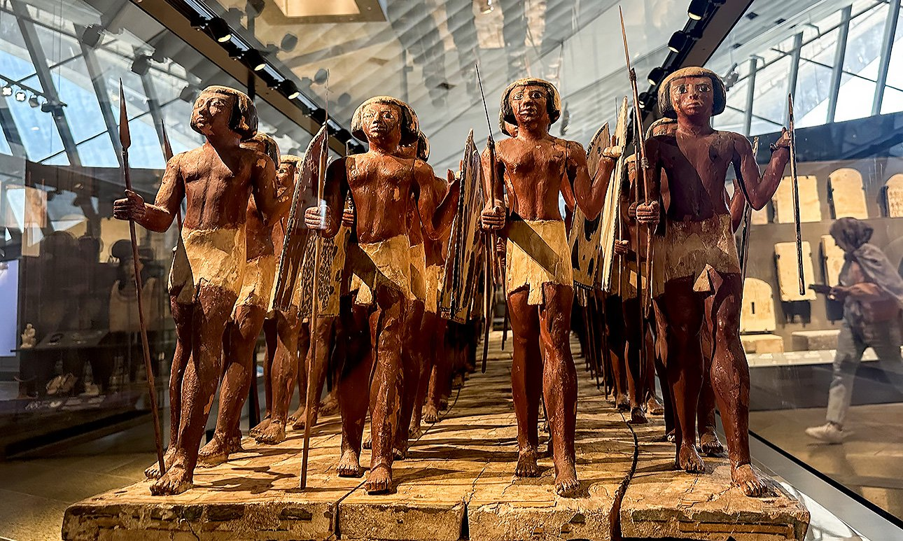
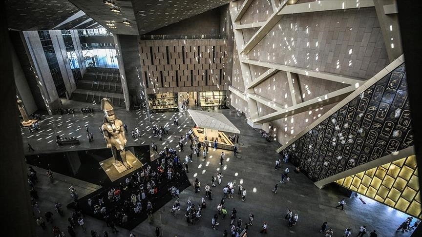
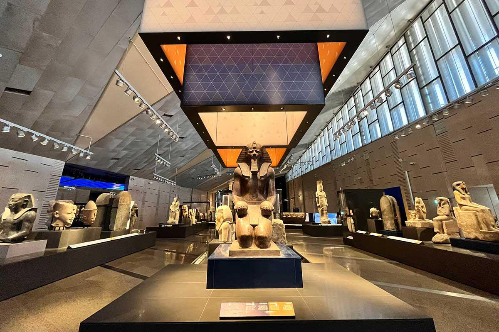
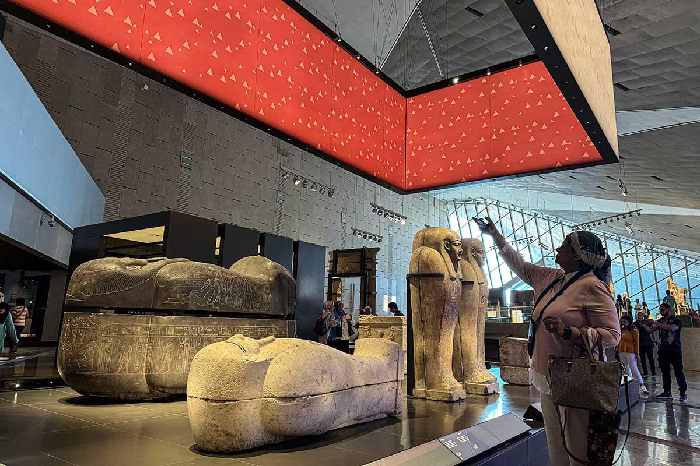
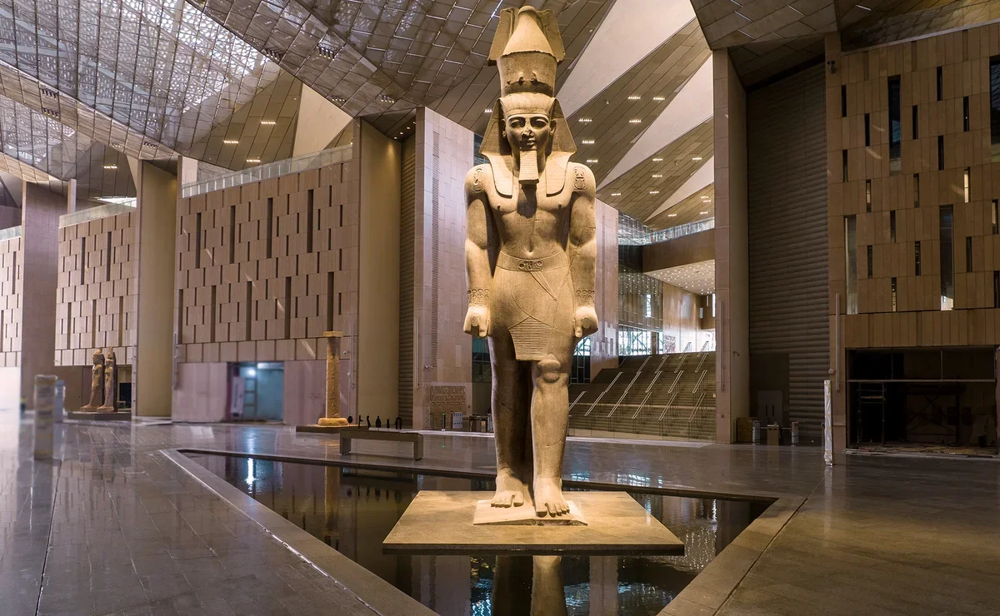
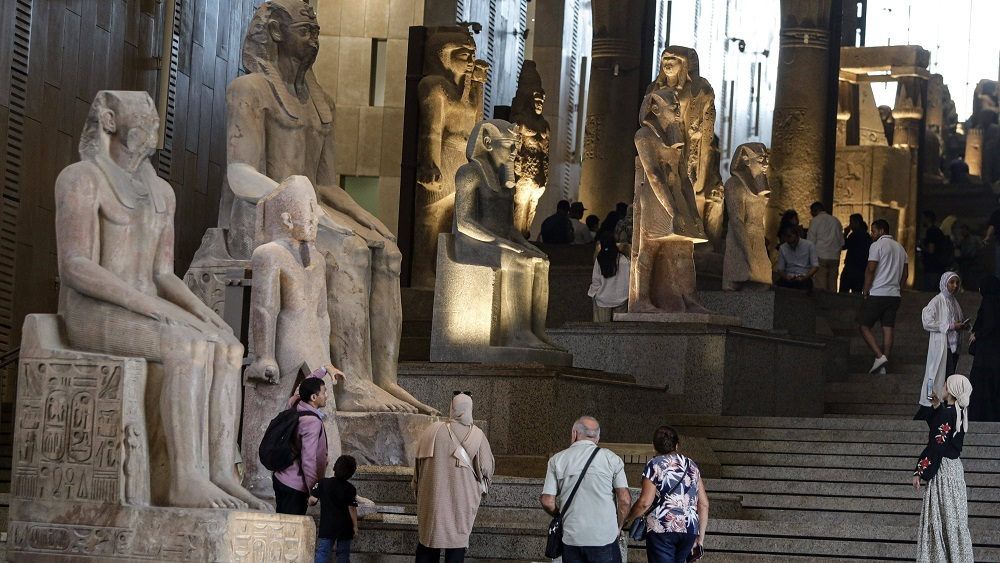
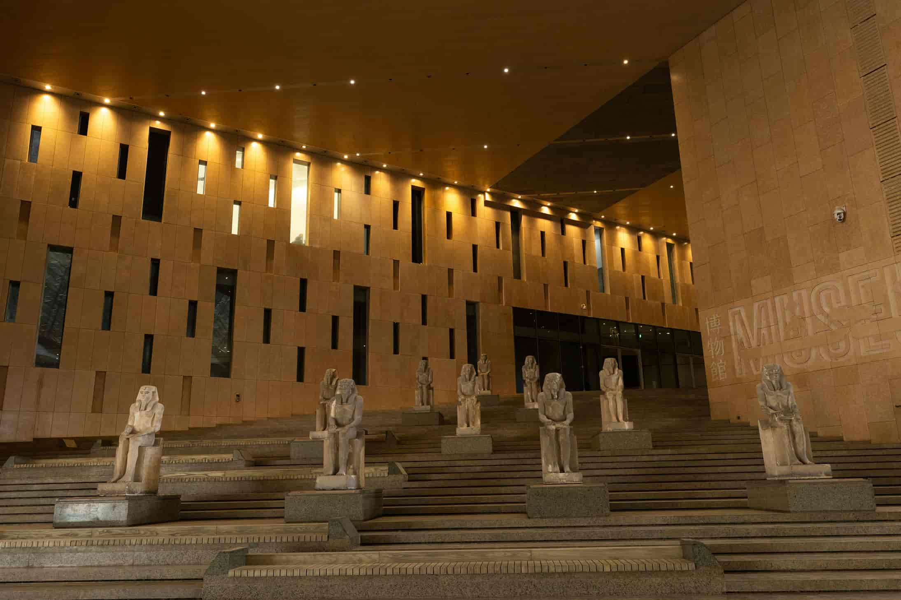
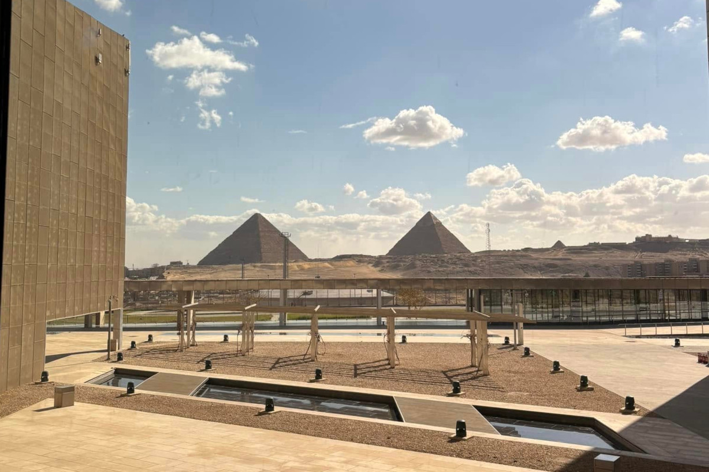
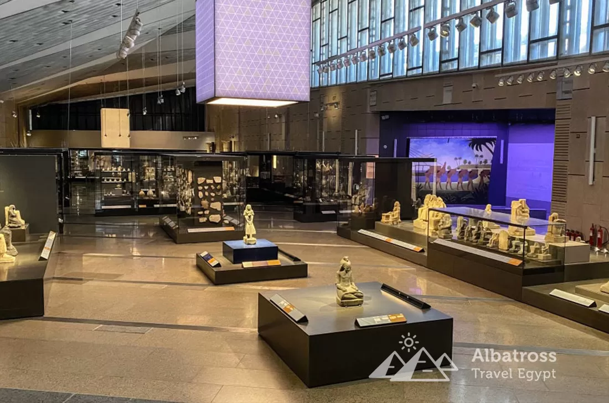

Misr muzeyi: Qadimgi sivilizatsiya xazinasi
Misr muzeyi (rasmiy nomi Qohira Misr muzeyi, inglizcha The Egyptian Museum) — dunyodagi eng mashhur va eng muhim arxeologik muzeylardan biri hisoblanadi. U Misr poytaxti Qohira shahrida, Tahrir maydoni yaqinida joylashgan. Bu muzey qadimgi Misr sivilizatsiyasiga oid eng boy va noyob kolleksiyalardan birini o‘zida jamlagan bo‘lib, insoniyat tarixining ming yillik sirlarini ochib beradi. Misr muzeyi nafaqat tarixiy yodgorliklarni saqlovchi maskan, balki butun dunyo olimlari, tarixchilar va sayyohlar uchun bebaho ilmiy va madaniy markazdir.
Misr muzeyining tashkil topishi
Misr muzeyi 1835-yilda tashkil etilgan bo‘lib, dastlab Misr hukumati tomonidan qadimgi yodgorliklarni chetga olib chiqilishidan himoya qilish maqsadida yaratilgan. Avvaliga muzey kichik va vaqtinchalik joylarda faoliyat yuritgan. Hozirgi mashhur bino esa 1902-yilda fransuz me’mori Marsel Durnon tomonidan loyihalashtirilgan. Muzey binosi neoklassik uslubda qurilgan bo‘lib, o‘z davri uchun juda zamonaviy hisoblangan. Shundan buyon Misr muzeyi dunyodagi eng yirik qadimgi tarix muzeylaridan biriga aylandi.
Muzey binosi va tuzilishi
Misr muzeyi ikki qavatdan iborat bo‘lib, unda 120 mingdan ortiq eksponat saqlanadi. Har bir zal muayyan davr yoki mavzuga bag‘ishlangan. Muzey ichki tuzilishi biroz murakkab bo‘lsa-da, u tashrif buyuruvchini qadimgi Misr tarixi bo‘ylab ketma-ket sayohatga olib boradi. Zallar fir’avnlar davri, diniy e’tiqodlar, kundalik hayot, san’at, me’morchilik va dafn marosimlariga oid buyumlar bilan to‘ldirilgan. Har bir eksponat o‘z davrining hayot tarzini aks ettiradi.
Qadimgi Misr sivilizatsiyasi va muzey
Qadimgi Misr sivilizatsiyasi insoniyat tarixidagi eng qadimgi va eng rivojlangan madaniyatlardan biri hisoblanadi. Nil daryosi bo‘yida shakllangan bu sivilizatsiya taxminan miloddan avvalgi 3000-yildan boshlab gullab-yashnagan. Misr muzeyi ana shu ulkan tarixning jonli guvohi bo‘lib, fir’avnlar hukmronligi, diniy marosimlar, san’at va ilm-fan rivojini yaqqol namoyon etadi.
Muzeyning eng mashhur bo‘limlari
Misr muzeyida juda ko‘p muhim bo‘limlar mavjud. Ularning ayrimlari butun dunyoga mashhur:
Tutankhamon xazinasi
Muzeyning eng mashhur va eng ko‘p tashrif buyuriladigan bo‘limi — Fir’avn Tutankhamon xazinasidir. 1922-yilda ingliz arxeologi Govard Karter tomonidan topilgan bu qabrdan minglab oltin buyumlar aniqlangan. Bu bo‘limda:
- Tutankhamonning oltin niqobi
- Oltin tobutlar
- Qimmatbaho taqinchoqlar
- Qimmatbaho taqinchoqlar
namoyish etiladi. Oltin niqob qadimgi Misr san’atining eng mukammal asarlaridan biri hisoblanadi.
Fir’avnlar haykallari zali
Bu zalda Ramzes II, Amenhotep III, Xafra kabi mashhur fir’avnlarning ulkan haykallari joylashgan. Haykallar qadimgi Misr san’atidagi kuch, hokimiyat va ilohiylik timsoli sifatida yaratilgan. Haykallarning yuz ifodasi, tananing aniqligi va detallari Misr haykaltaroshligining yuksak darajasini ko‘rsatadi.
Mumiyalar zali
Misr muzeyining eng qiziqarli va ilmiy ahamiyatga ega bo‘limlaridan biri — mumiyalar zalidir. Bu yerda fir’avnlar va zodagonlarning mumiyalangan jasadlari saqlanadi. Mumiyalash jarayoni Misr diniy e’tiqodining muhim qismi bo‘lib, odam o‘limdan keyin ham hayot davom etishiga ishonilgan. Mumiyalar orqali olimlar qadimgi misrliklarning sog‘ligi, ovqatlanishi va turmush tarzini o‘rganadilar.
Kundalik hayot buyumlari
Muzeyda faqat fir’avnlarga oid emas, balki oddiy xalq hayotini aks ettiruvchi buyumlar ham mavjud. Bular:
- Idish-tovoqlar
- Mehnat qurollari
- Zargarlik buyumlari
- O‘yinchoqlar
Bu eksponatlar qadimgi Misr jamiyatining ijtimoiy tuzilishini tushunishga yordam beradi.
Yozuv va san’at
Misr muzeyida ieroglif yozuvlar tushirilgan toshlar, papiruslar va haykallar keng namoyish etilgan. Iyerogliflar qadimgi Misr yozuvi bo‘lib, diniy matnlar, tarixiy voqealar va kundalik hayotni ifodalagan. Shuningdek, devoriy rasmlar, rangli haykallar va naqshlar Misr san’atining o‘ziga xos uslubini ko‘rsatadi. Ranglar ming yillar davomida o‘z jilosini yo‘qotmagan.
Diniy e’tiqod va dafn marosimlari
Qadimgi misrliklar hayotdan keyingi hayotga qattiq ishongan. Shu sababli dafn marosimlari juda murakkab va tantanali bo‘lgan. Muzeyda:
- Sarkofaglar
- Dafn niqoblari
- “O‘liklar kitobi” parchalari
saqlanadi. Bu buyumlar Misr diniy falsafasini chuqurroq anglash imkonini beradi.
Misr muzeyi faqat ko‘rgazma maskani emas, balki ilmiy tadqiqotlar markazidir. Bu yerda arxeologlar, tarixchilar va restavratorlar doimiy faoliyat olib boradilar. Muzey qadimgi yodgorliklarni saqlash, o‘rganish va kelajak avlodlarga yetkazishda muhim rol o‘ynaydi.
Zamonaviy o‘zgarishlar

So‘nggi yillarda Misr hukumati Katta Misr muzeyi (GEM) loyihasini amalga oshirmoqda. Kelajakda ko‘plab eksponatlar yangi zamonaviy muzeyga ko‘chiriladi. Ammo Qohira Misr muzeyi baribir tarixiy ahamiyatini saqlab qoladi.
Misr muzeyi — bu qadimgi sivilizatsiya yuragi, insoniyat tarixining tirik guvohi hisoblanadi. Bu yerda har bir buyum ming yillik hikoyani so‘zlab beradi. Misr muzeyiga tashrif buyurish — tarix, san’at va sirli dunyo bilan yuzma-yuz uchrashishdir.